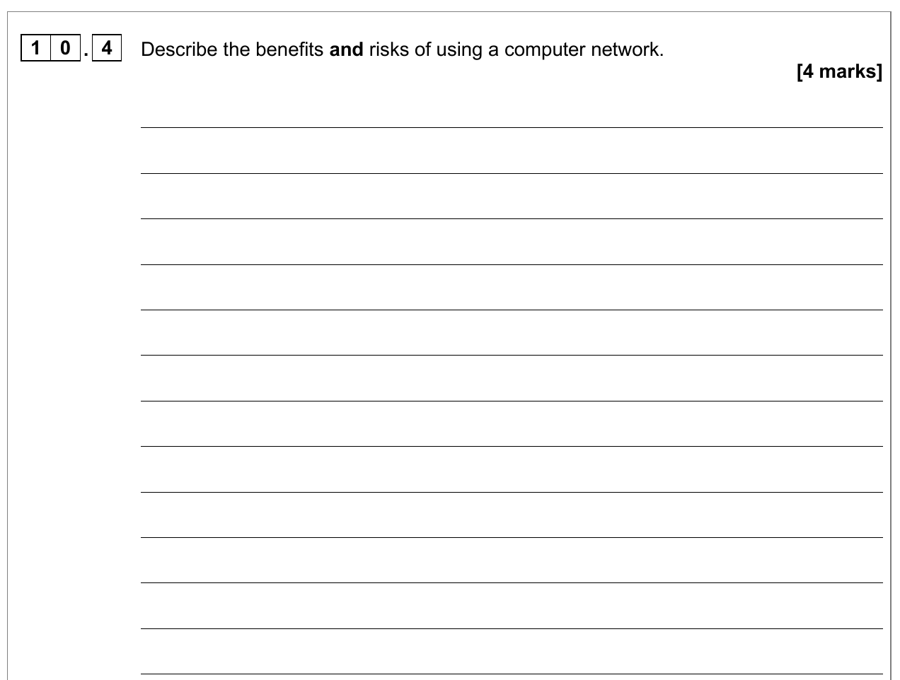

Define a computer network, investigate why organisations use one and explain its benefits and risks with exam precision.
AO1 · KnowAO2 · ApplyExam precision
Interactive lesson
Start your learning record
Your work saves on this device. At the end, download one PDF and submit it to your Teams assignment.
No account required · No data leaves this browser
What are we getting better at?Developing network points into precise, contextual exam explanations.
Saved
00
Lesson map
Computer networks
60 minutes
Lesson objective
Define a computer network and analyse its common uses, benefits and risks in context.
Knowledge
Know what makes a system a network and identify common network uses, benefits, risks and costs.
Skills
Classify evidence, develop a point using cause and impact, and write a balanced four-mark response.
Understanding
Understand that whether networking is useful depends on the users, resources, data and possible consequences.
AO1Define and identify
State what a network is and recognise valid examples.
→
AO2Apply and explain
Connect each benefit or risk to a specific context.
→
EXAMDevelop precisely
Point → how it happens → impact.
Begin with what you can infer before seeing the formal definition.
01
Do Now · 8 minutes
Connected or stand-alone?
Retrieve · Infer
Opening scenarioRead once · then answer from memory
A classroom has six PCs. Students can open the same files, use one printer and send work to their teacher. A separate laptop stores everything only on its own internal drive and cannot exchange data with the classroom PCs.
1Retrieval: state one difference between an embedded system and a general-purpose computer.Previous learning
2Which devices appear to be connected? What evidence tells you this?Infer
3Identify two resources that the connected computers can share.Identify
4Predict one benefit and one risk of connecting the computers.Predict
5Write your provisional definition of a computer network.Define
Your predictions are saved so you can refine them after the reading.
02
Main Activity 1 · 18 minutes
Read, classify, develop
AO1 → AO2
Textbook reading extractOxfordAQA International GCSE Computer Science · printed pp. 226–227 · PDF pp. 231–232
What is a computer network?
“A network is a system that connects computers together.”
For an exam-ready definition, make both ideas explicit: two or more computers or devices are connected so that they can communicate or pass data between them.
Networks let users share information, files, printers, communication services and an Internet connection. Software, security controls and backups can also be managed centrally. These conveniences bring costs and risks: equipment and administration cost money; faults can make shared resources unavailable; attackers may intercept data; and malware can spread between connected computers.
Connected devicesAt least two computers or devices are linkedCommunicationData can pass between connected devicesShared resourceHardware, files or services used by several users
Sources: OxfordAQA International GCSE Computer Science textbook, printed pp. 226–227 (PDF pp. 231–232); OxfordAQA specification, section 3.5, printed p. 27.
Return to your starter
Your provisional definition
No starter idea recorded yet.
Evidence sort: classify each example as a common use, a benefit, or a risk/cost. Some ideas are related, but choose the best description for the statement as written.
11Develop one benefit and one risk. For each: point → how it happens → impact.AO2
Precision check
Your definition names connected computers/devices and communication or passing data.
Each developed point explains the mechanism rather than merely naming a benefit or risk.
Each point finishes with a consequence for the users or organisation.
Finish your improved response before moving to the decision scenario.
03
Main Activity 2 · 20 minutes
Should the exam office connect?
AO2 · Context
Decision scenarioSchool examination office
Twelve stand-alone computers
The examinations team currently stores candidate records on twelve separate PCs. Staff want to work on the same up-to-date files, print seating plans to one secure printer, install software updates centrally and back up records every night. The records contain sensitive personal data. If shared files or the secure printer become unavailable during the examination period, important deadlines could be missed.
Two lenses: first argue as a network consultant, then challenge the proposal as a risk auditor. Every point must refer to this exam-office context.
1Identify three ways the examination office would use the network.AO1
2Network consultant: explain two benefits for this organisation.AO2
3Risk auditor: explain two risks and their possible impact.AO2
4Write a balanced recommendation. Should the exam office use a computer network?Reasoned decision
Context and balance check
You referred to candidate records, shared files, secure printing, central updates or backups.
Your risks state what could fail or be attacked and the consequence.
Your recommendation weighs a benefit against a risk before reaching a conclusion.
Your contextual explanations prepare you for the unchanged past-paper question.
04
Extension · exam practice
Original past-paper question
June 2025 · Paper 2
Original OxfordAQA International GCSE Computer Science 9210/2 question · June 2025 · Question 10.4 · unchanged screenshot

The wording, question number and mark allocation are reproduced exactly from the supplied question paper. Open the complete question paper.
This extension is optional. Complete it if you finish the core work early.
05
Plenary · 6 minutes
Three-sentence exit ticket
Retrieve · Develop
Exactly three sentences
Show what has improved since your starter.
Write one complete sentence in each box. Make every technical phrase earn its place.
Complete all three sentences to finish the core lesson.
06
Finish and submit
Your learning record
Export · Teams
0%core complete
Complete each core activity to build your full report.
The extension is optional and will still appear in your PDF if you attempt it.
One file for submission
Download your PDF learning report
Your report includes your name, class, progress and every saved response. Check the downloaded file before uploading it.
1
Download the PDF to your device.
2
Open the Week 2 Session 1 assignment in Teams.
3
Attach the PDF, check it opens, then select Turn in.
Your progress is stored only in this browser using the name and class entered on the first screen.